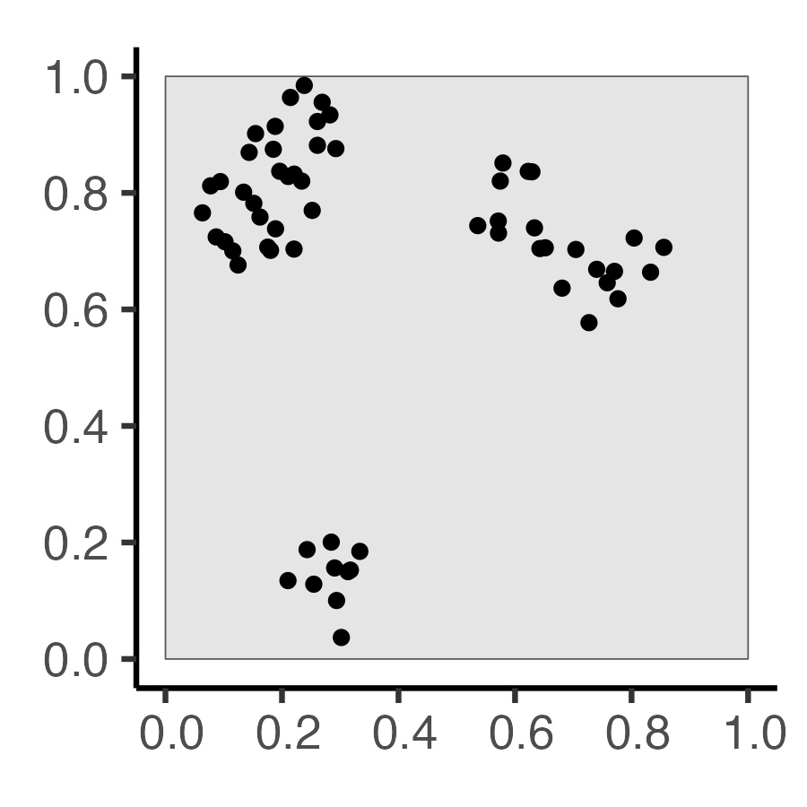
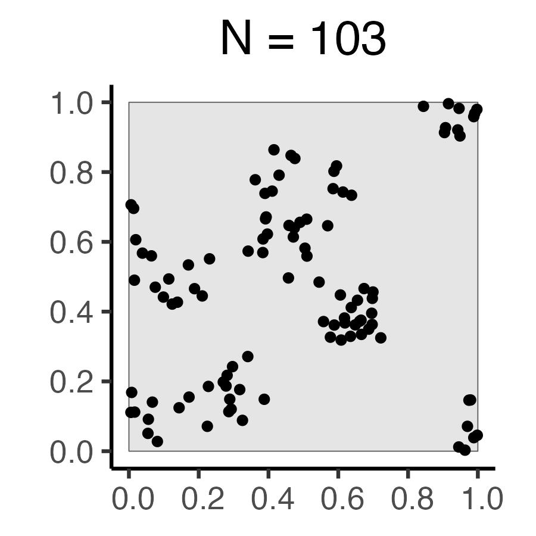
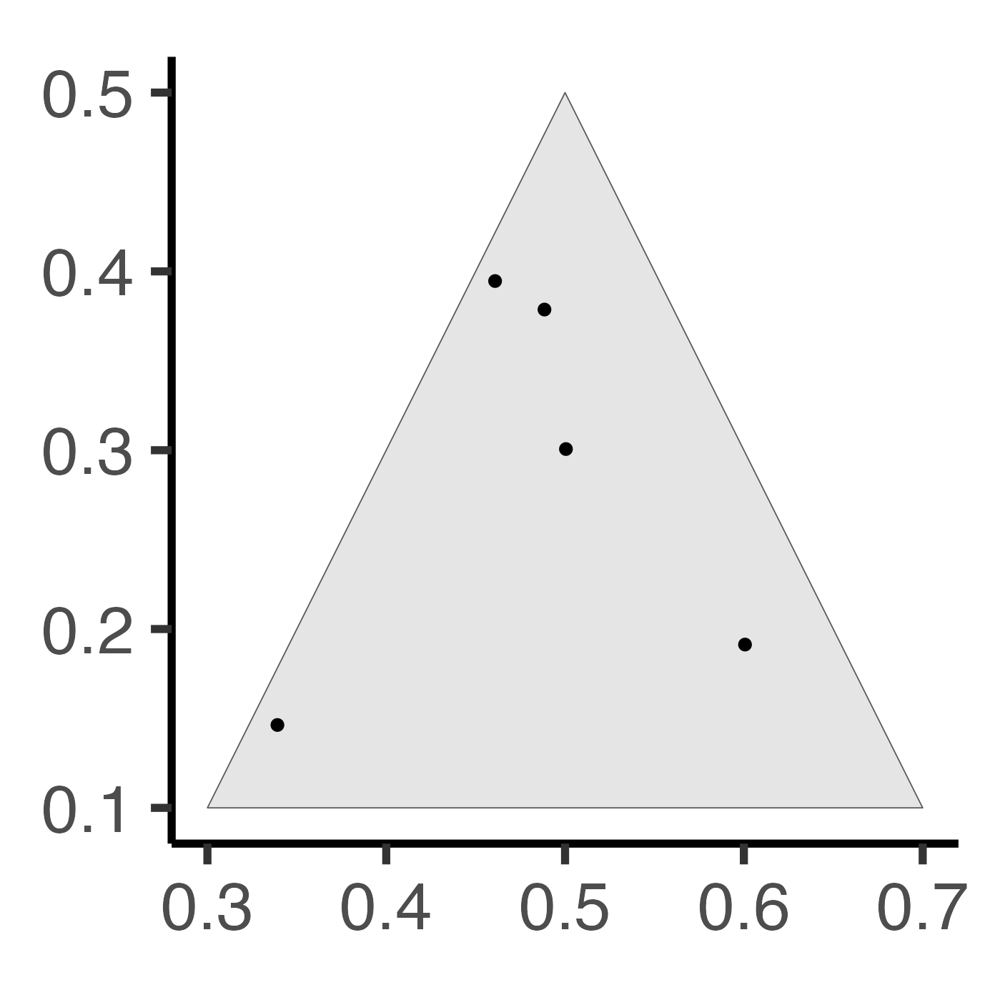
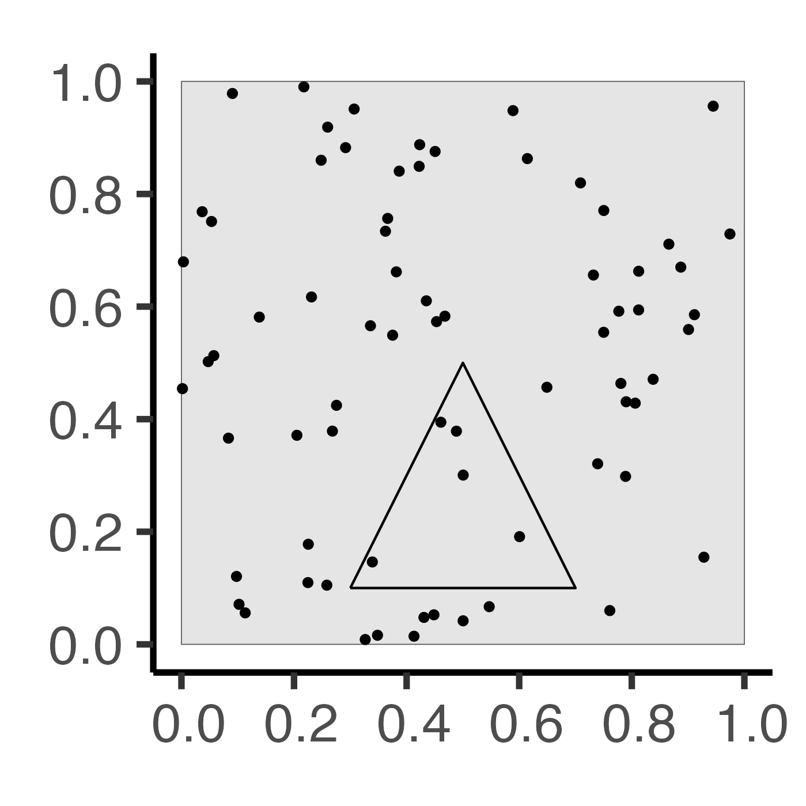
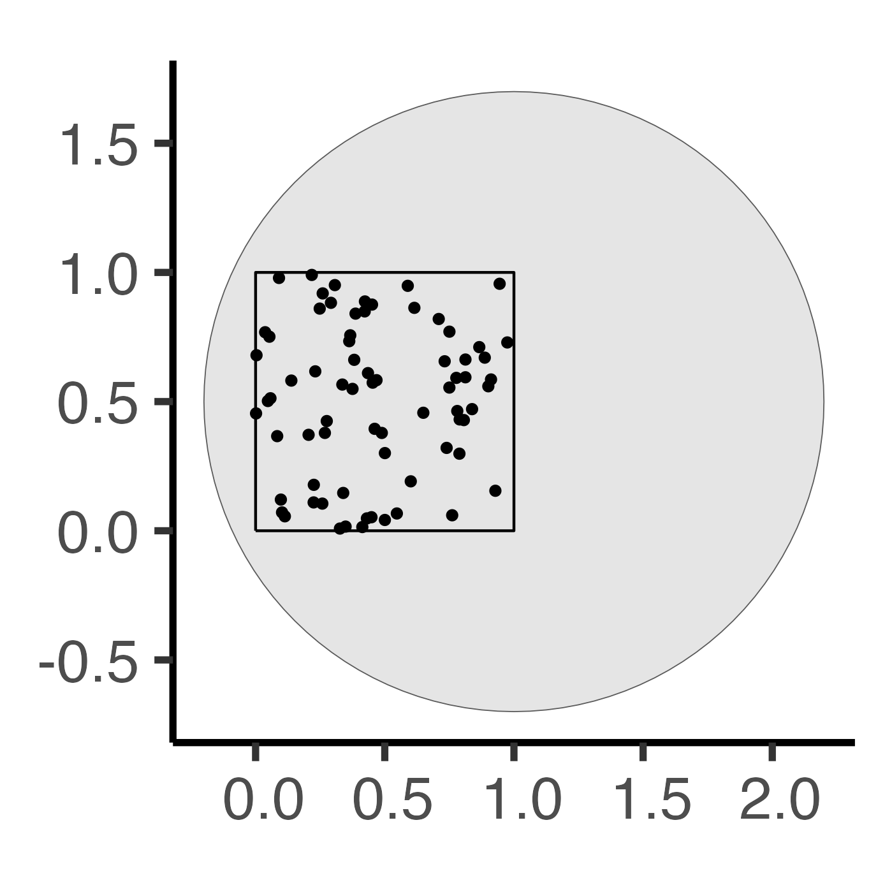
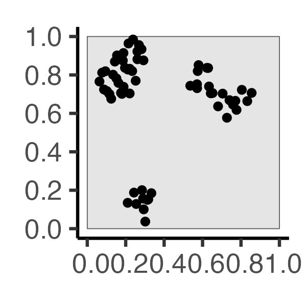
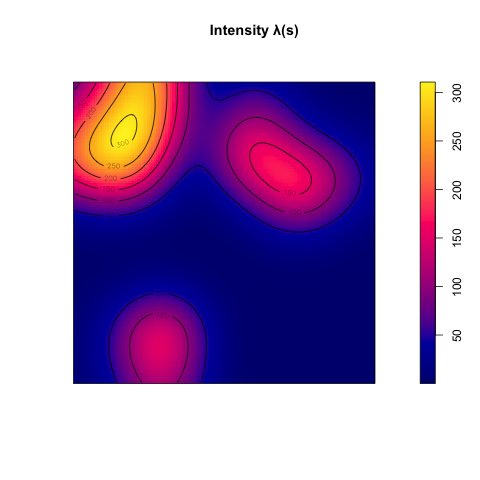
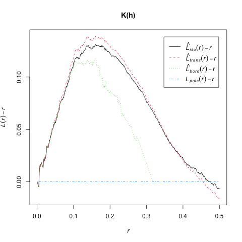

Code
source("../dsan-globals/_globals.r")
library(sf)Linking to GEOS 3.11.0, GDAL 3.5.3, PROJ 9.1.0; sf_use_s2() is TRUEPPOL 6805 / DSAN 6750: GIS for Spatial Data Science
Fall 2024
| Weeks 6-8 (My labels) |
Naïve Clustering | → | Point Process Models | → | Autocorrelation in Point Data | → | Autocorrelation in Lattice Data |
| Waller and Gotway (2004) | (A bunch of stuff we already learned) | → | Ch 5: Analysis of Spatial Point Patterns | → | Ch 6: Point Data (Cases and Controls) | → | Ch 7: Regional Count Data (First mention of autocorrelation on page 227) |
| Schabenberger and Gotway (2004) | Ch 1 (Page 14): Autocorrelation | → | (A bunch of more complicated stuff we’ll learn later) | ||||
source("../dsan-globals/_globals.r")
library(sf)Linking to GEOS 3.11.0, GDAL 3.5.3, PROJ 9.1.0; sf_use_s2() is TRUElibrary(tidyverse)
library(spatstat)
set.seed(6805)
N <- 60
r_core <- 0.05
obs_window <- square(1)
# Regularity via Inhibition
#reg_sims <- rMaternI(N, r=r_core, win=obs_window)
cond_reg_sims <- rSSI(r=r_core, N)
# CSR data
#csr_sims <- rpoispp(N, win=obs_window)
cond_sr_sims <- rpoint(N, win=obs_window)
### Clustered data
#clust_sims <- rMatClust(kappa=6, r=2.5*r_core, mu=10, win=obs_window)
#clust_sims <- rMatClust(mu=5, kappa=1, scale=0.1, win=obs_window, n.cond=N, w.cond=obs_window)
#clust_sims <- rclusterBKBC(clusters="MatClust", kappa=10, mu=10, scale=0.05, verbose=FALSE)
# Each cluster consist of 10 points in a disc of radius 0.2
nclust <- function(x0, y0, radius, n) {
#print(n)
return(runifdisc(10, radius, centre=c(x0, y0)))
}
cond_clust_sims <- rNeymanScott(kappa=5, expand=0.0, rclust=nclust, radius=2*r_core, n=10)
# And PLOT
plot_w <- 400
plot_h <- 400
plot_scale <- 2.25
cond_reg_plot <- cond_reg_sims |> sf::st_as_sf() |>
ggplot() +
geom_sf() +
dsan_theme()
ggsave("images/cond_reg.png", cond_reg_plot, width=plot_w, height=plot_h, units="px", scale=plot_scale)
cond_sr_plot <- cond_sr_sims |> sf::st_as_sf() |>
ggplot() +
geom_sf() +
dsan_theme()
ggsave("images/cond_sr.png", cond_sr_plot, width=plot_w, height=plot_h, units="px", scale=plot_scale)
cond_clust_plot <- cond_clust_sims |> sf::st_as_sf() |>
ggplot() +
geom_sf() +
dsan_theme()
ggsave("images/cond_clust.png", cond_clust_plot, width=plot_w, height=plot_h, units="px", scale=plot_scale)| Autocorrelation | \(I = -1\) | ← | \(I = 0\) | → | \(I = 1\) |
|---|---|---|---|---|---|
| Description | Negative Autocorr | No Autocorr | Positive Autocorr | ||
| Event at \(\mathbf{s} = (x,y)\) Implies | Less likely to find another point nearby | No information about nearby points | More likely to find another point nearby | ||
| Resulting Pattern | Regularity | Reg/Clustered Mix | Clustering | ||
| Process(es) Which Could Produce Pattern | 1st Order: Random within even-spaced grid 2nd Order: Competition |
1st Order: i.i.d. points 2nd Order: i.i.d. distances |
1st Order: Tasty food at clust centers 2nd Order: Cooperation |
||
| Fixed \(N\) | 60 | 60 | 60 | ||
 |
 |
 |
library(tidyverse)
library(spatstat)
set.seed(6807)
lambda <- 60
r_core <- 0.05
obs_window <- square(1)
# Regularity via Inhibition
# Regularity via Inhibition
reg_sims <- rMaternI(lambda, r=r_core, win=obs_window)
# CSR data
csr_sims <- rpoispp(N, win=obs_window)
### Clustered data
clust_mu <- 10
clust_sims <- rMatClust(kappa=lambda / clust_mu, scale=2*r_core, mu=10, win=obs_window)
# And PLOT
plot_w <- 400
plot_h <- 400
plot_scale <- 2.25
reg_plot <- reg_sims |> sf::st_as_sf() |>
ggplot() +
geom_sf() +
labs(title=paste0("N = ",reg_sims$n)) +
dsan_theme()
ggsave("images/reg.png", reg_plot, width=plot_w, height=plot_h, units="px", scale=plot_scale)
csr_plot <- csr_sims |> sf::st_as_sf() |>
ggplot() +
geom_sf() +
labs(title=paste0("N = ",csr_sims$n)) +
dsan_theme()
ggsave("images/csr.png", csr_plot, width=plot_w, height=plot_h, units="px", scale=plot_scale)
clust_plot <- clust_sims |> sf::st_as_sf() |>
ggplot() +
geom_sf() +
labs(title=paste0("N = ",clust_sims$n)) +
dsan_theme()
ggsave("images/clust.png", clust_plot, width=plot_w, height=plot_h, units="px", scale=plot_scale)| Autocorrelation | \(I = -1\) | ← | \(I = 0\) | → | \(I = 1\) |
|---|---|---|---|---|---|
| Description | Negative Autocorr | No Autocorr | Positive Autocorr | ||
| Event at \(\mathbf{s} = (x,y)\) Implies | Less likely to find another point nearby | No information about nearby points | More likely to find another point nearby | ||
| Resulting Pattern | Regularity | Reg/Clustered Mix | Clustering | ||
| Process(es) Which Could Produce Pattern | 1st Order: Random within even-spaced grid 2nd Order: Competition |
1st Order: i.i.d. points 2nd Order: i.i.d. distances |
1st Order: Tasty food at clust centers 2nd Order: Cooperation |
||
| Fixed Intensity \(\lambda\) | 60 | 60 | 60 | ||
| Random \(N\) |  |
 |
 |
N <- 60
obs_window <- square(1)
window_scale <- 3.5
csr_sims_square <- rpoispp(N, win=obs_window)
# Triangular window
obs_window_tri <- st_sfc(st_polygon(list(
matrix(c(0.3,0.1,0.7,0.1,0.5,0.5,0.3,0.1), byrow=TRUE, nrow=4)
)))
obs_window_geom <- st_sfc(st_linestring(
matrix(c(0,0,1,0,1,1,0,1,0,0), byrow=TRUE, nrow=5)
))
csr_sims_tri <- ppp(csr_sims_square$x, csr_sims_square$y, window=as.owin(obs_window_tri))
tri_plot <- csr_sims_tri |> sf::st_as_sf() |>
ggplot() +
geom_sf() +
dsan_theme("quarter");
ggsave("images/window_tri.png", tri_plot, width=plot_w, height=plot_h, units="px", scale=window_scale)
# Square window
square_plot <- csr_sims_square |> sf::st_as_sf() |>
ggplot() +
geom_sf() +
geom_sf(data=obs_window_tri |> sf::st_boundary()) +
dsan_theme("quarter")
ggsave("images/window_square.png", square_plot, width=plot_w, height=plot_h, units="px", scale=window_scale)
# Circular window
obs_window_disc <- st_sfc(st_point(c(1, 0.5))) |> st_buffer(1.2)
csr_sims_circ <- ppp(csr_sims_square$x, csr_sims_square$y, window=as.owin(obs_window_disc))
circ_plot <- csr_sims_circ |> sf::st_as_sf() |>
ggplot() +
geom_sf() +
geom_sf(data=obs_window_geom) +
dsan_theme("quarter")
ggsave("images/window_circ.png", circ_plot, width=plot_w, height=plot_h, units="px", scale=window_scale)| Regular | CSR | Clustered |
|---|---|---|
|  |  |  |
spatstat!
center_l_function <- function(x, ...) {
if (!spatstat.geom::is.ppp(x) && !spatstat.geom::is.fv(x)) {
stop("Please provide either ppp or fv object.")
}
if (spatstat.geom::is.ppp(x)) {
x <- spatstat.explore::Lest(x, ...)
}
r <- x$r
l_centered <- spatstat.explore::eval.fv(x - r)
return(l_centered)
}
cond_clust_sf <- cond_clust_sims |> sf::st_as_sf()
pines_plot <- cond_clust_sf |>
ggplot() +
geom_sf() +
dsan_theme("full")
ggsave("images/pines.png", pines_plot)
# density() calls density.ppp() if the argument is a ppp object
den <- density(cond_clust_sims, sigma = 0.1)
#summary(den)
png("images/intensity_plot.png")
plot(den, main = "Intensity λ(s)")
contour(den, add = TRUE) # contour plot
dev.off()
# And Kest / Lest
kest_result <- Kest(cond_clust_sims, rmax=0.5, correction="best")
lest_result <- center_l_function(cond_clust_sims, rmax=0.5)
png("images/lest.png")
plot(lest_result, main="K(h)")
dev.off()| First-Order | Second-Order | |
|---|---|---|
| Events considered individually \(\implies\) Intensity function \(\lambda(\mathbf{s})\) | Second-Order: Events considered pairwise \(\implies\) \(K\)-function \(K(\vec{h})\) | |
|  |  |  |